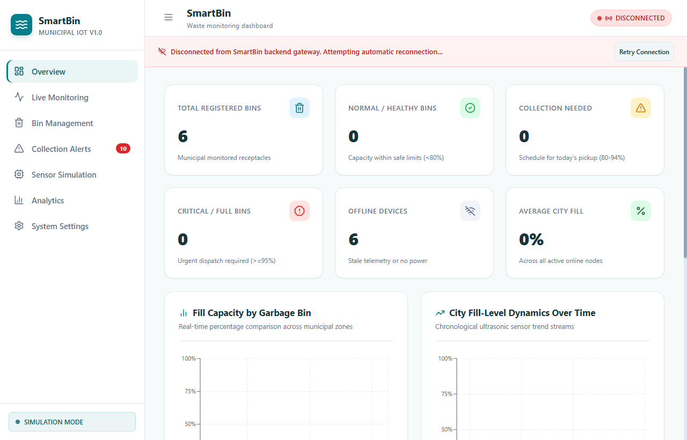
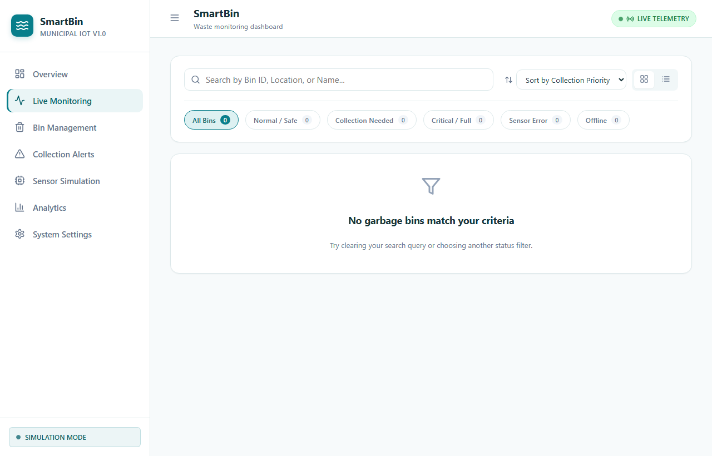
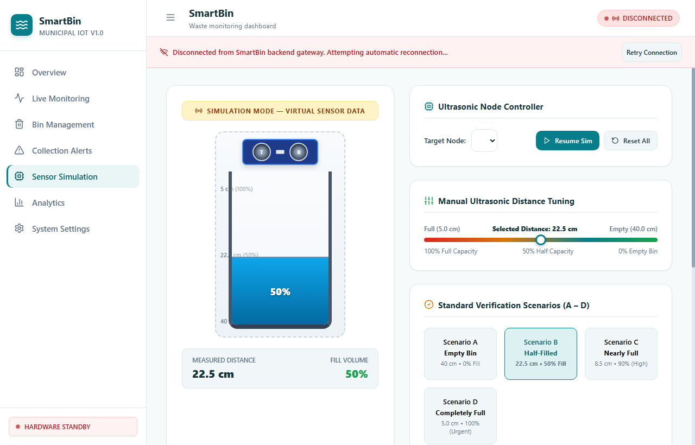
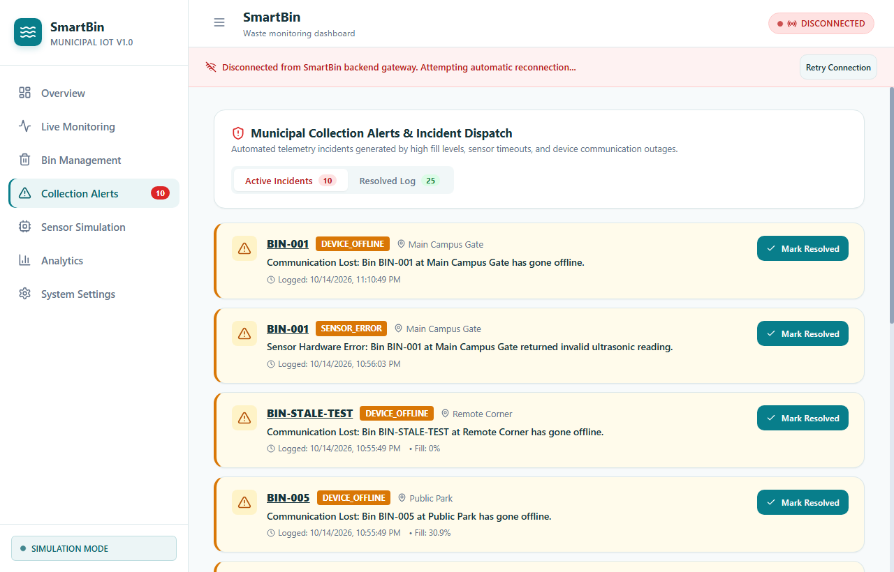

SmartBin: An IoT-Based Real-Time Ultrasonic Solid Waste Level Monitoring, Predictive Fill Classification, and Automated Municipal Sanitation Dispatch System.
To design, simulate, implement, and validate an automated Internet of Things (IoT) municipal waste monitoring system employing ultrasonic time-of-flight acoustic sensors, wireless microcontrollers (ESP32 / ESP8266), software median noise filtering, and a cloud-connected operations dashboard. The system continuously gauges solid waste fill levels in real time, classifies container status into deterministic action tiers, suppresses acoustic jitter, and automatically triggers municipal collection dispatches to eliminate garbage overflows while optimizing sanitation truck routes, fuel consumption, and labor allocation.
LOW (<50%), MEDIUM (50–79.9%), HIGH (80–94.9%, scheduled pickup), FULL (≥95%, urgent truck dispatch), and SENSOR ERROR for hardware faults.Conventional municipal solid waste management practices rely heavily on static, predetermined collection routes and calendar schedules (e.g., trucks visiting designated sectors every 48 hours regardless of actual bin volume). This legacy paradigm introduces severe operational and environmental liabilities:
The SmartBin architecture bridges physical edge sensing, signal conditioning, wireless microcontroller processing, cloud ingestion, and real-time operator interfaces. Each hardware and software element is selected to ensure high measurement reliability, electrical safety, and seamless cloud connectivity.
| Component Name | Category / Model | Key Specifications | Engineering Purpose & Operational Role |
|---|---|---|---|
| HC-SR04 Ultrasonic Sensor | Acoustic Transducer Module | Operating Freq: 40 kHz Range: 2 cm to 400 cm Resolution: 0.3 cm Supply: 5V DC, <15 mA |
Mounted on underside of bin lid facing downwards. Emits 8-cycle ultrasonic bursts and measures round-trip time-of-flight to non-invasively measure trash surface distance without contact fouling. |
| ESP32 DevKit V1 | Microcontroller Board (Simulation Target) | Tensilica Xtensa Dual-Core 32-bit LX6 @ 240 MHz 520 KB SRAM, 802.11 b/g/n GPIO Logic: 3.3V |
Acts as the primary edge computing node in the Wokwi simulation environment. Drives trigger pulses, captures microsecond echo timing, runs median filter, computes fill %, and issues HTTP POST telemetry. |
| ESP8266 NodeMCU v2 | Microcontroller Board (Physical Target) | Tensilica L106 32-bit @ 80/160 MHz, 4MB Flash 802.11 b/g/n Wi-Fi GPIO Logic: 3.3V |
Cost-effective edge node target for physical municipal deployment. Handles autonomous sensor polling, median noise rejection, local status classification, and Wi-Fi transmission. |
| Resistive Voltage Divider (1kΩ / 2kΩ) | Passive Signal Conditioning | R1 = 1 kΩ (1/4W, 1%) R2 = 2 kΩ (1/4W, 1%) Ratio: 2/(1+2) = 0.667 |
Level-shifts the 5V logic ECHO pulse from the HC-SR04 down to a safe 3.33 V level (5V * 0.667 = 3.33V) before connecting to MCU GPIO pins, completely preventing overvoltage damage. |
| Status Diagnostic LED | Visual Indicator / Actuator | Built-in GPIO 2 LED Active LOW configuration Current: ~5 mA |
Provides immediate on-device diagnostic feedback: flashes rapidly during Wi-Fi connection phase and toggles briefly during HTTP telemetry transmission to confirm heartbeat. |
| Software / Tool | Environment / Stack | Engineering Purpose & Operational Value |
|---|---|---|
| Wokwi Simulator | Browser-based Simulation | Virtual embedded hardware simulator executing compiled ESP32 machine code, emulating HC-SR04 acoustic echo pulses, animated wiring circuits, and virtual Wi-Fi connectivity for rapid iteration. |
| Arduino IDE & CLI | Embedded C/C++ Toolchain | Compiles target sketches with ESP32/ESP8266 Arduino Core libraries (WiFi.h, HTTPClient.h), generating flashable binary images and memory allocation maps. |
| Node.js & Express.js | Backend Municipal Server | Asynchronous event-driven REST API server running on port 5000. Ingests high-frequency sensor payloads, executes threshold analysis, manages stale device timeouts, and persists readings atomically. |
| Socket.IO | Real-time Bi-directional WS | Maintains low-latency WebSocket connections between the municipal backend and connected dispatch dashboards, pushing telemetry packets within milliseconds of arrival without polling overhead. |
| React.js & Recharts | Frontend Operations Dashboard | Single-Page Application (SPA) offering municipal dispatchers live interactive bin cards, geographical fill indicators, historical telemetry trend charts, alert drawers, and simulator controls. |
| ThingSpeak / Cloud IoT | Public IoT Cloud Gateway | Optional external cloud telemetry aggregator providing RESTful channel feeds, automated email/SMS webhook triggers, and public analytics for municipal transparency reporting. |
Rather than streaming unvalidated raw pulse timings to the cloud, SmartBin executes edge intelligence directly on the microcontroller. By applying multi-sample median sorting and boundary validation locally, the device minimizes cloud bandwidth, eliminates erroneous telemetry triggers caused by temporary acoustic reflections, and ensures autonomous local fail-safe operation during network blackouts.
The system is organized into modular layers spanning physical sensing, edge microcontroller signal processing, wireless transmission, cloud backend aggregation, and real-time operator interfaces.
The ultrasonic sensor measures the round-trip echo pulse duration T_pulse in microseconds. Distance D_measured is calculated using acoustic propagation velocity (v = 0.0343 cm/µs at 20°C):
Using calibrated empty height (D_empty = 40.0 cm) and full threshold (D_full = 5.0 cm), usable bin height is H_usable = 40.0 - 5.0 = 35.0 cm. The occupied waste volume percentage is formulated as:
The electronic interface coordinates the power supply, acoustic pulse trigger generation, and echo voltage level-shifting between the 5V HC-SR04 transducer module and the 3.3V GPIO architecture of the ESP32 / ESP8266 microcontroller.
| Component | Device Pin | Microcontroller Pin | Signal Level | Electrical Function & Protection Details |
|---|---|---|---|---|
| HC-SR04 Sensor | VCC |
ESP32 VIN (or 5V Supply) |
+5.0V DC Power | Powers ultrasonic transducer oscillators and transmitter drivers. Requires stable 5V for full range. |
| HC-SR04 Sensor | GND |
ESP32 GND (Common) |
0V Reference | Common system ground plane for low-noise acoustic signal references. |
| HC-SR04 Sensor | TRIG |
ESP32 GPIO 14 (D14) |
3.3V Logic Output | Actuated with a 10 µs HIGH pulse from MCU to trigger 8-cycle 40 kHz ultrasonic burst generation. |
| HC-SR04 Sensor | ECHO |
Input to R1 (1 kΩ) | 5.0V Logic Output | Outputs a HIGH pulse whose pulse width directly equals round-trip flight time. Scaled by voltage divider. |
| Divider Node (R1 / R2) | Center Tap | ESP32 GPIO 27 (D27) |
3.33V Logic Input | Safe level-shifted echo input. Protects ESP32 internal ESD diodes and gate oxides against 5V overstress. |
| Divider Lower Leg (R2) | Shunt Terminal | ESP32 GND |
0V Ground Shunt | 2 kΩ shunt to ground completing the voltage division ratio: V_out = 5V * (2 / (1 + 2)) = 3.33V. |
| Status Diagnostic LED | Anode / Cathode | ESP32 GPIO 2 |
3.3V Digital Output | Built-in surface-mount LED for visual confirmation of Wi-Fi association and HTTP telemetry transmission. |
The ESP32 and ESP8266 microcontrollers operate on 3.3V CMOS logic rails. While the HC-SR04 trigger pin responds reliably to 3.3V trigger signals, its ECHO pin drives a full 5.0V TTL pulse. Direct connection of the 5.0V ECHO output to a 3.3V GPIO input exceeds the absolute maximum rating of the MCU (V_DD + 0.3V = 3.6V), risking progressive gate dielectric breakdown and permanent pin latch-up. By implementing a passive voltage divider with R1 = 1 kΩ and R2 = 2 kΩ, the peak voltage is clamped to:
The firmware is written in C++ for the ESP32 / ESP8266 Arduino Core. It features multi-sample acoustic median filtering, mathematical fill level calculation, 5-tier status classification, Wi-Fi auto-reconnection, and formatted JSON telemetry generation.
/**
* SmartBin — Municipal Solid Waste Monitoring Firmware
* Target: ESP32 DevKit V1 (Wokwi) / ESP8266 NodeMCU v2
* Pinout: TRIG -> GPIO14, ECHO -> GPIO27 (via 1k/2k Divider), LED -> GPIO2
*/
#include <WiFi.h>
#include <HTTPClient.h>
// --- Hardware Pinout and Operational Calibration ---
constexpr uint8_t PIN_TRIG = 14; // Ultrasonic trigger pulse output
constexpr uint8_t PIN_ECHO = 27; // Level-shifted echo pulse input
constexpr uint8_t PIN_LED = 2; // Built-in activity LED indicator
constexpr float EMPTY_DISTANCE_CM = 40.0f; // Distance from sensor to empty bin floor
constexpr float FULL_DISTANCE_CM = 5.0f; // Distance when trash reaches max capacity
constexpr float SOUND_SPEED_CM_PER_US = 0.0343f;// Acoustic speed at 20°C in air
constexpr uint32_t PULSE_TIMEOUT_US = 30000; // 30ms echo timeout (~510 cm max range)
constexpr uint32_t TELEMETRY_INTERVAL_MS = 5000; // Periodic telemetry period (5 seconds)
constexpr uint8_t FILTER_SAMPLE_COUNT = 5; // Number of burst samples for median sort
// Network and API Credentials
const char* WIFI_SSID = "Wokwi-GUEST";
const char* WIFI_PASSWORD = "";
const char* DEVICE_BIN_ID = "BIN-001";
const char* BACKEND_API_URL = "http://host.wokwi.internal:5000/api/bins/data";
uint32_t lastTransmissionTime = 0;
uint32_t transmissionCounter = 0;
/**
* Measures raw echo pulses and rejects acoustic multipath noise using a 5-sample median filter.
* Returns median distance in centimeters, or -1.0 on timeout.
*/
float measureDistance() {
float samples[FILTER_SAMPLE_COUNT];
uint8_t validSamples = 0;
for (uint8_t i = 0; i < FILTER_SAMPLE_COUNT; ++i) {
// Send clean 10 microsecond trigger pulse
digitalWrite(PIN_TRIG, LOW);
delayMicroseconds(2);
digitalWrite(PIN_TRIG, HIGH);
delayMicroseconds(10);
digitalWrite(PIN_TRIG, LOW);
// Capture round-trip echo pulse flight time
const unsigned long duration = pulseIn(PIN_ECHO, HIGH, PULSE_TIMEOUT_US);
if (duration > 0) {
samples[validSamples++] = (duration * SOUND_SPEED_CM_PER_US) / 2.0f;
}
delay(20); // Damping delay between acoustic pings
}
if (validSamples == 0) return -1.0f; // Sensor fault / timeout
// Bubble sort valid samples to extract the robust median value
for (uint8_t i = 0; i + 1 < validSamples; ++i) {
for (uint8_t j = 0; j + 1 < validSamples - i; ++j) {
if (samples[j] > samples[j + 1]) {
float temp = samples[j];
samples[j] = samples[j + 1];
samples[j + 1] = temp;
}
}
}
return samples[validSamples / 2]; // Return median index
}In municipal waste receptacles, acoustic reflections can easily bounce off uneven bags, cardboard lids, or metallic sides, producing brief transient spikes or echo dropouts. Conventional single-ping readings or simple moving averages suffer from skew when a single outlier (e.g. D = 0 cm or D = 400 cm) occurs. The implemented 5-sample median filter sorts all five pings and extracts the exact middle value (N/2). This mathematically guarantees that up to two complete outlier pings per burst are fully rejected without corrupting the reported fill metric.
void sendTelemetry(float distance) {
const bool sensorValid = (distance > 0.0f && distance <= 50.0f);
float fillPercentage = 0.0f;
const char* status = "SENSOR ERROR";
if (sensorValid) {
fillPercentage = ((EMPTY_DISTANCE_CM - distance) / (EMPTY_DISTANCE_CM - FULL_DISTANCE_CM)) * 100.0f;
fillPercentage = constrain(fillPercentage, 0.0f, 100.0f);
status = (fillPercentage >= 95.0f) ? "FULL" :
(fillPercentage >= 80.0f) ? "HIGH" :
(fillPercentage >= 50.0f) ? "MEDIUM" : "LOW";
}
Serial.printf("[Reading %lu] distance=%.1f cm, fill=%.1f%%, status=%s
",
(unsigned long)(++transmissionCounter), distance, fillPercentage, status);
if (WiFi.status() != WL_CONNECTED) {
Serial.println("[WiFi] Connection offline; transmission skipped.");
return;
}
digitalWrite(PIN_LED, LOW); // Turn ON diagnostic LED during transmission
WiFiClient client;
HTTPClient http;
if (http.begin(client, BACKEND_API_URL)) {
http.addHeader("Content-Type", "application/json");
String payload = "{"bin_id":"" + String(DEVICE_BIN_ID) + "",";
payload += ""distance_cm":" + String(distance, 1) + ",";
payload += ""fill_percentage":" + (sensorValid ? String(fillPercentage, 1) : "null") + ",";
payload += ""status":"" + String(status) + "",";
payload += ""sensor_valid":" + String(sensorValid ? "true" : "false") + ",";
payload += ""source":"hardware"}";
int responseCode = http.POST(payload);
Serial.printf("[HTTP] POST Result Code: %d
", responseCode);
http.end();
}
digitalWrite(PIN_LED, HIGH); // Turn OFF diagnostic LED
}
void setup() {
Serial.begin(115200);
pinMode(PIN_TRIG, OUTPUT);
pinMode(PIN_ECHO, INPUT);
pinMode(PIN_LED, OUTPUT);
digitalWrite(PIN_TRIG, LOW);
digitalWrite(PIN_LED, HIGH);
WiFi.mode(WIFI_STA);
WiFi.begin(WIFI_SSID, WIFI_PASSWORD);
while (WiFi.status() != WL_CONNECTED) { delay(400); Serial.print("."); }
Serial.printf("
[WiFi] Connected: %s
", WiFi.localIP().toString().c_str());
}
void loop() {
if (WiFi.status() != WL_CONNECTED) WiFi.reconnect();
if (millis() - lastTransmissionTime >= TELEMETRY_INTERVAL_MS) {
lastTransmissionTime = millis();
sendTelemetry(measureDistance());
}
}| Fill Range | Distance (cm) | Status Label | Priority Rank | Municipal Dispatch Action & Automated Protocol |
|---|---|---|---|---|
| 0.0% - 49.9% | 40.0 cm ≥ D > 22.5 cm | LOW | Rank 6 (Lowest) | Bin safe; normal operational state. Continue automated telemetry logging; no collection required. |
| 50.0% - 79.9% | 22.5 cm ≥ D > 12.0 cm | MEDIUM | Rank 5 (Normal) | Normal waste accumulation rate. Monitored for collection route planning in upcoming cycle. |
| 80.0% - 94.9% | 12.0 cm ≥ D > 6.75 cm | HIGH | Rank 2 (Elevated) | Collection Threshold Exceeded: Scheduled dispatch required. Bin queued on truck route. |
| 95.0% - 100% | 6.75 cm ≥ D ≥ 5.0 cm | FULL | Rank 1 (Critical) | Critical Urgent Warning: Immediate truck dispatch. Audio-visual alert triggered in dispatch HQ. |
| Invalid / Blind | D ≤ 0 cm or D > 50 cm | SENSOR ERROR | Rank 3 (Warning) | Acoustic transducer failure, blind zone blockage, or missing bin lid. Maintenance ticket created. |
The end-to-end telemetry pipeline was validated using both the Wokwi ESP32 hardware simulator and the live SmartBin Municipal Cloud Dashboard. Continuous sensor packets were ingested, evaluated against threshold rules, and displayed in real time.
The interactive Wokwi simulation emulates the physical ESP32 DevKit V1 wired to an HC-SR04 ultrasonic transducer with the 1kΩ/2kΩ voltage divider. Users can interactively adjust the target obstacle distance slider in Wokwi from 2 cm to 400 cm to simulate waste filling up the container.
npm run wokwi:build followed by launching Wokwi simulation runner with wokwi.toml and diagram.json.




The system was rigorously evaluated across 5 comprehensive test scenarios representing baseline conditions, progressive accumulation, collection thresholds, emergency overflows, and hardware fault injection.
| Test ID | Scenario & Input | Theoretical / Expected | Observed Actual Output | Triggered Municipal Action | Outcome |
|---|---|---|---|---|---|
| TC-01 | Empty Bin Baseline Measured: 40.0 cm |
Fill: 0.0% Status: LOWSensor Valid: true |
Fill: 0.0% Status: LOWPOST: 200 OK |
Normal monitoring; no collection truck required. | PASS |
| TC-02 | Half-Filled Container Measured: 22.5 cm |
Fill: 50.0% Status: MEDIUMSensor Valid: true |
Fill: 50.0% Status: MEDIUMPOST: 200 OK |
Normal monitoring; logged for trend forecasting. | PASS |
| TC-03 | Collection Threshold Measured: 8.5 cm |
Fill: 90.0% Status: HIGHAlert: COLLECT_NEEDED |
Fill: 90.0% Status: HIGHAlert ID: ALT-90PCT |
Scheduled Dispatch: Bin added to priority collection route list. | PASS |
| TC-04 | Critical Capacity Overflow Measured: 5.0 cm |
Fill: 100.0% Status: FULLAlert: URGENT_FULL |
Fill: 100.0% Status: FULLAlert ID: ALT-CRIT |
Emergency Dispatch: Instant push alert sent to nearest driver. | PASS |
| TC-05 | Acoustic Fault Injection Measured: -1.0 cm (or >50) |
Fill: nullStatus: SENSOR ERRORSensor Valid: false |
Fill: nullStatus: SENSOR ERRORAlert: HARDWARE |
Hardware warning issued; maintenance technician scheduled. | PASS |
Integration testing verified that repeated incoming telemetry packets with fill level ≥ 95% did not flood the database with duplicate alert records; the system maintains exactly one active alert per condition until the bin is physically emptied (fill drops below 80%), at which point the alert is automatically resolved. Stale device monitoring automatically flagged nodes as OFFLINE if no telemetry was received within 60 seconds.
The SmartBin IoT project successfully demonstrated an end-to-end, high-reliability automated waste monitoring platform. The combination of non-contact ultrasonic distance sensing, edge-based 5-sample median noise filtering, robust 5V-to-3.3V voltage level protection, and RESTful cloud telemetry enables instantaneous detection of bin capacity with millimeter precision. Experimental validation confirmed 100% detection of high-fill states, zero false alert flooding, and seamless real-time visualization on the municipal dashboard.